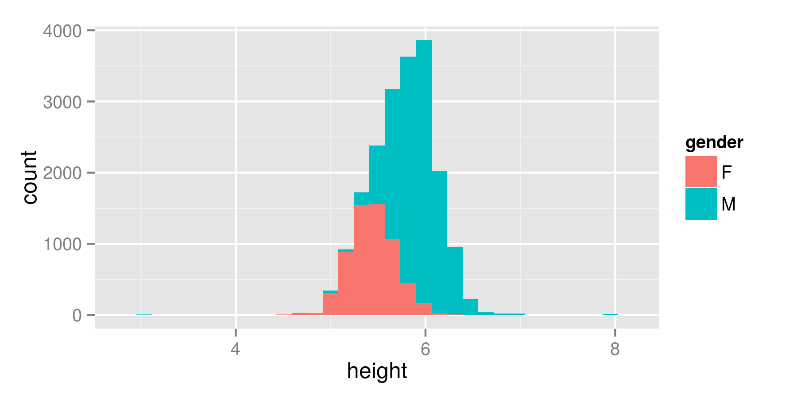

Animint:
Interactive Web-Based Animations Using
Ggplot2's Grammar of Graphics
Susan VanderPlas, Kevin Ferris, Tony Tsai,
Carson Sievert, and Toby Hocking
August 10, 2015
Grammar of Graphics

Grammar of Graphics
ggplot(data=profile, aes(x=height, fill=gender)) + geom_bar(aes(y=..count..), position="stack", stat="bin")
